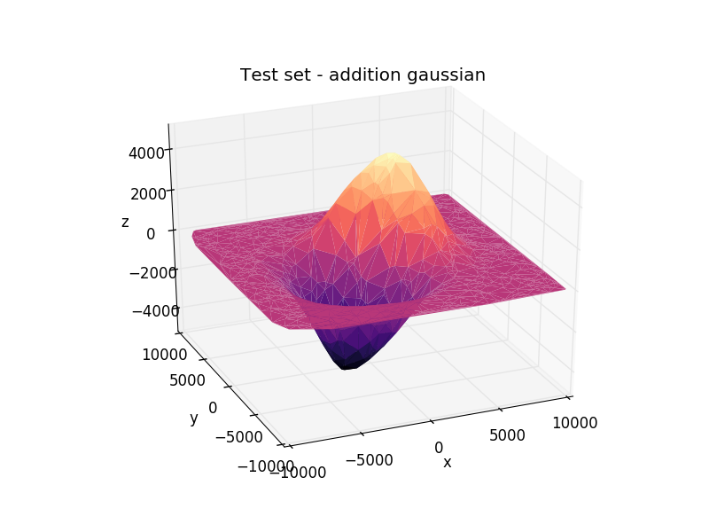
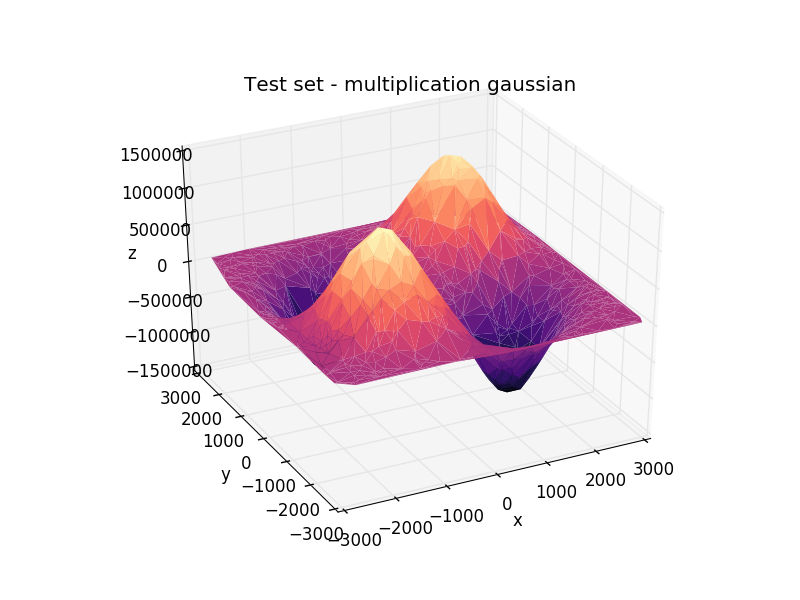
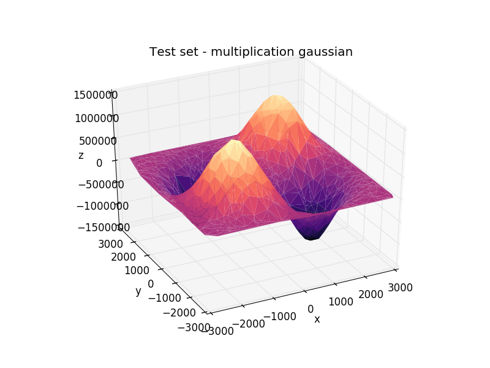
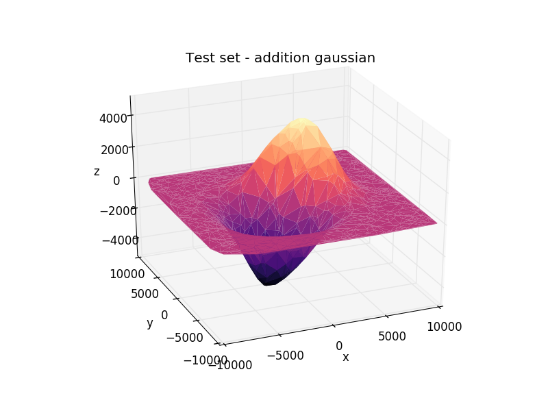
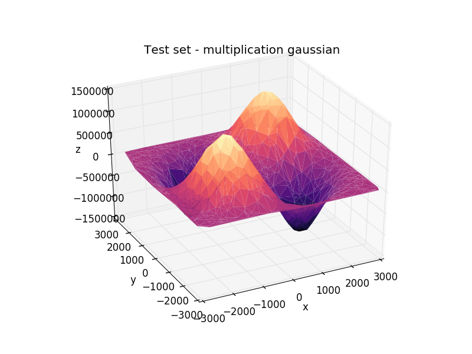

Gaussian Process
The Gaissian Process curves are intresting. It's possible to see the fit in the training range and outside it quickly goes to 0.
 


The Gaissian Process curves are intresting. It's possible to see the fit in the training range and outside it quickly goes to 0.

